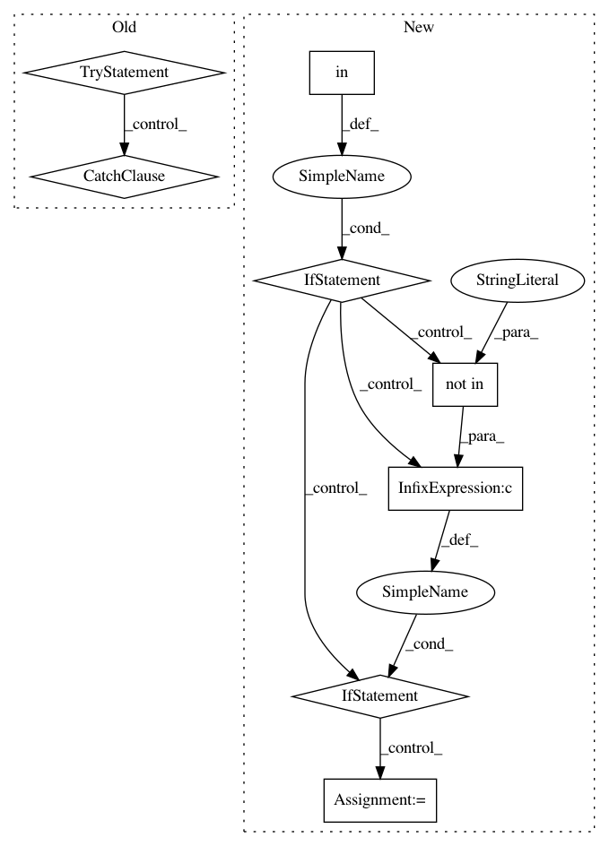

cb96463747988e4607eb8710195e55a5ff9caacb,flow/core/kernel/vehicle/traci.py,TraCIVehicle,update,#TraCIVehicle#Any#,106
Before Change
min_gap = self.minGap[self.get_type(veh_id)]
self.__vehicles[veh_id]["headway"] = headway[1] + min_gap
self.__vehicles[veh_id]["leader"] = headway[0]
try:
self.__vehicles[headway[0]]["follower"] = veh_id
except KeyError:
print(traceback.format_exc())
// update the sumo observations variable
self.__sumo_obs = vehicle_obs.copy()
// update the lane leaders data for each vehicle
self._multi_lane_headways()
After Change
min_gap = self.minGap[self.get_type(veh_id)]
self.__vehicles[veh_id]["headway"] = headway[1] + min_gap
self.__vehicles[veh_id]["leader"] = headway[0]
if headway[0] in self.__vehicles:
leader = self.__vehicles[headway[0]]
// if veh_id is closer from leader than another follower
// (in case followers are in different converging edges)
if ("follower_headway" not in leader or
headway[1] + min_gap < leader["follower_headway"]):
leader["follower"] = veh_id
leader["follower_headway"] = headway[1] + min_gap
// update the sumo observations variable
self.__sumo_obs = vehicle_obs.copy()
// update the lane leaders data for each vehicle
self._multi_lane_headways()
In pattern: SUPERPATTERN
Frequency: 3
Non-data size: 8
Instances
Project Name: flow-project/flow
Commit Name: cb96463747988e4607eb8710195e55a5ff9caacb
Time: 2019-08-09
Author: nathanlct@icloud.com
File Name: flow/core/kernel/vehicle/traci.py
Class Name: TraCIVehicle
Method Name: update
Project Name: QUANTAXIS/QUANTAXIS
Commit Name: 9a53bf54eef6cad69d223076b27f920a99432288
Time: 2017-12-18
Author: yutiansut@qq.com
File Name: QUANTAXIS/QAMarket/QAMarket.py
Class Name: QA_Market
Method Name: warp_market
Project Name: CamDavidsonPilon/lifelines
Commit Name: 21cec6ac2b1852e470a14ac5a333113a31e61034
Time: 2020-07-13
Author: cam.davidson.pilon@gmail.com
File Name: lifelines/fitters/__init__.py
Class Name: RegressionFitter
Method Name: _compute_central_values_of_raw_training_data